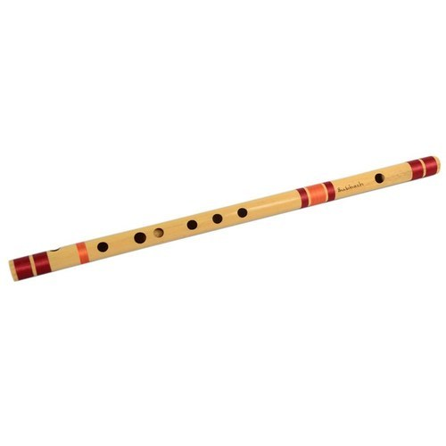

Wind Instruments
Saxophone
The saxophone is woodwind instruments. It is made up of brass and it is played with a single-reed mouthpiece. It has holes in it which player closes using a system of key mechanisms. It is used in classical music, orchestras, marching bands. It is not a common instrument among people as a hobby.
Audio Clip
video Clip
Flute
A quiet and highly portable instrument, it is very easy to learn, according to the Ambient Mixer blog, and doesn’t cost too much money. It can also be used as a stepping stone to other instruments. Though primarily a classical instrument, it has adapted to other genres and was a foundational instrument for the 1970s rock group Jethro Tull.
Audio Clip
video Clip
Bansuri
Bansuri is a very sensitive instrument; almost all the delicate graces, curves, embellishments and shades of classical music can be performed to perfection upon it. The highest order of music can be played on this instrument, and its resonance in mandra saptak (lower octave) leaves a rare charm in the minds of its listeners. Being a portable instrument, it can be carried easily from place to place and climatic changes have very little or no effect on the seasoned bamboo.